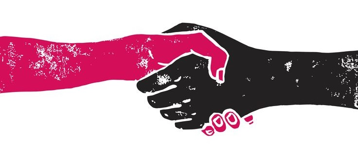
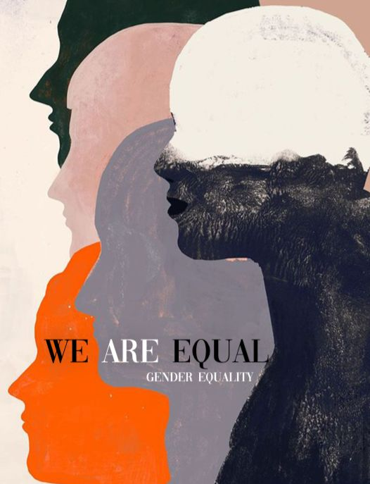
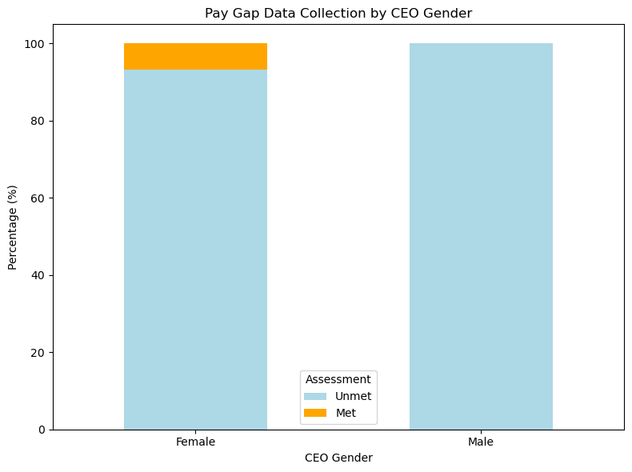
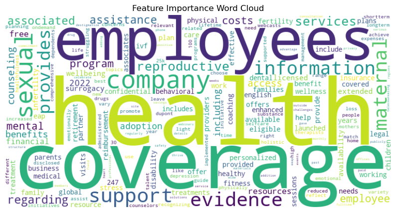
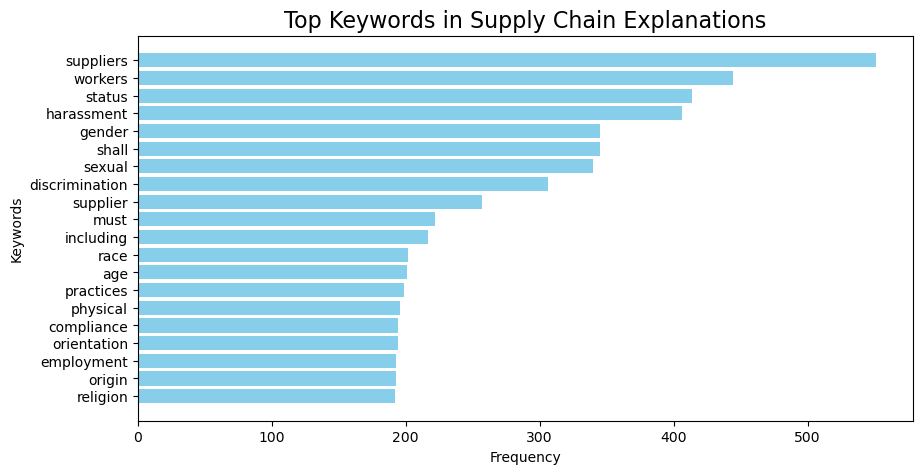

Exploring the Intersection of Gender Equality and Financial Performance: Analyzing Leadership and Organizational Practices

Introduction
This website will show in-depth research on gender equality and financial performance, exploring how organizational practices and leadership impact business outcomes. Using data science techniques, we examined how factors such as CEO gender, company policies on diversity and inclusion, and financial performance relate to organizational success. The website provides a comprehensive look at these topics and provides meaningful insights into the relationship between gender equality and financial performance at the company level through data analysis and visualization. We hope these data-driven discoveries can guide organizations in making strategic decisions that are more inclusive and financially successful.
Questions We Are Addressing
Is there a gender inequality problem in North American companies?
Does a company’s gender equality score have an impact on the company’s financial performance? And conversely, how does a company’s financial performance influence its commitment to gender equality practices?
Does the gender of a company’s CEO have an impact on the company’s financial performance?
How do financial and operational factors influence a company’s decision to procure from women-owned businesses?
How can textual evidence in reports be used to automate the assessment of a company’s performance in gender equality and healthcare standards?
Literature review
Enterprises are an important economic organization that is widespread in society. How to create an inclusive environment at the firm level, especially for gender equality, is a very important proposition that we would like to study in conjunction with the financial health, governance structure and business practices of firms.
Reviewing previous research on the association of gender inequality with other factors at the firm level, Hoogendoorn et al. (2013)1 found that gender-balanced teams in business teams were more likely to have better sales and profit performance, although no direct factors were found to support this difference. Eagly and Heilman (2016)2 mentioned that the business case of “female participation enhances corporate financial performance” and argue that more in-depth analysis is needed if this idea is to be validated. Simionescu et al. (2021)3 argue that female board members have a positive impact on corporate performance, particularly in terms of price-earnings ratios. All of the above were studied using traditional qualitative analysis methods or econometric methods.
When it comes to CEO gender and its relationship with finance, Khan and Vieito (2013)4 find that female CEOs lead firms with lower risk but face less tailored compensation packages. Jalbert, Jalbert, and Furumo (2013)5 show that CEO gender influences management practices and financial performance. Specifically, when studying women-led companies, Bell (2005)6 highlights that they offer higher pay and opportunities for female executives, narrowing the gender pay gap.
Motivation
In this era, more and more people notice that the high levels of inclusion in a company are an important indicator that can promote growth and also reflect whether a company has a humanized environment. Different types of data play a key role in understanding these dynamics, such as financial data and textual data from company reports, which provide insights that can drive meaningful change in the way companies operate. By exploring the relationship between gender equality policies, diversity leadership, and financial success, this project aims to highlight how a company can foster an inclusive environment. The results of our project can empower organizations to make data-driven decisions, which not only improve gender equality but also improve long-term sustainability. With the development of society, we need to pursue both financial success and social progress, so it is hoped that insights about creating an organization that positively develops will be given in this project.

Key Topics
- Data Collection and Cleaning:
We merged the World Benchmark Alliance’s 2023 gender benchmark dataset7 with data scraped from the EDGAR API to ensure that all the data we needed was consolidated into one large dataset. In addition, we applied data cleaning to ensure the validity of the data analysis.
- Selecting Financial Performance Metrics:
In fact, we were able to crawl through the EDGAR API to hundreds of different financial metrics for a company, and we picked a few key metrics that we thought gave a better picture of the company’s financial health.
- Data Visualization:
In order to make our results more readable and intuitive, we used a variety of chart types, such as bar chart, heat map and word cloud, to present data-driven insights.
- Dimensionality Reduction:
Using techniques like PCA and t-SNE to reduce high-dimensional data into more understandable patterns, helping us visualize the key factors that influence companies’ gender equality scores.
- Clustering and Segmentation:
Grouping companies based on similar characteristics to identify patterns and trends across different financial and gender equality metrics.
- Machine Learning:
Applying machine learning algorithms to explore the relationship between different variables. Through training models, we can provide insights into the relationship between gender equality and company performance.
Use Cases
- Clustering Companies by Gender Equality Performance:
With unsupervised learning techniques such as PCA and t-SNE, we get different clusters and can identify systemic challenges embodied in the clusters. Male CEOs are more likely to enter firms with better overall performance in the industry compared to female CEOs, even though female CEOs can have some potential to balance gender equality and financial performance. Systemic change is still needed if this is to change.
- Gender Equality in Supply Chains:
We explored the relationship between whether companies sourced from women-owned businesses and a range of financial metrics, as well as their overall gender equality scores. Gender equality in the supply chain is a little-explored topic, and we hope to show more possibilities from the supply chain.
- Automated Evaluation of Compliance with Gender Equality Standards:
Using Random Forest Modeling and Natural Language Processing techniques, we hope to automate the process of assessing whether a company’s actions and policies meet certain gender equality criteria, based on text from the company’s public reports. While we are currently only exploring the process of automating health coverage assessments, there is potential to explore more outwardly to be able to assess whether companies are meeting other gender equality standards based on this. Such automated assessments could increase efficiency and provide a data-driven way to assess compliance with gender equality standards.
Call to Action
We encourage you to explore the insights and results presented in this project. Diving into the data-driven stories and uncover how gender equality practices are influencing business performance. Follow along as we continue to expand on these findings and share actionable insights. If you’re interested in learning more or discussing how these findings can apply to your organization, feel free to reach out. Let’s work together to drive positive change towards gender equality in the workplace and beyond!
  